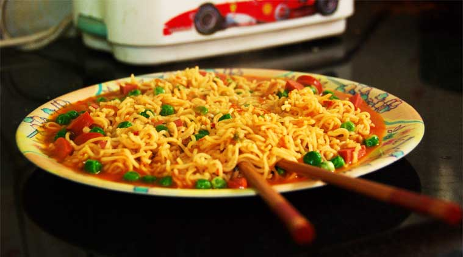
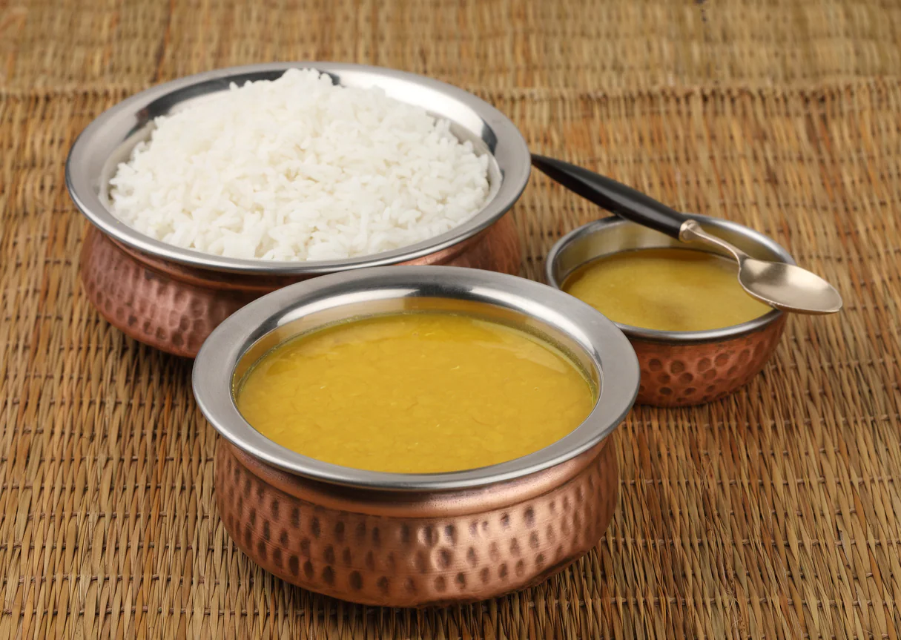
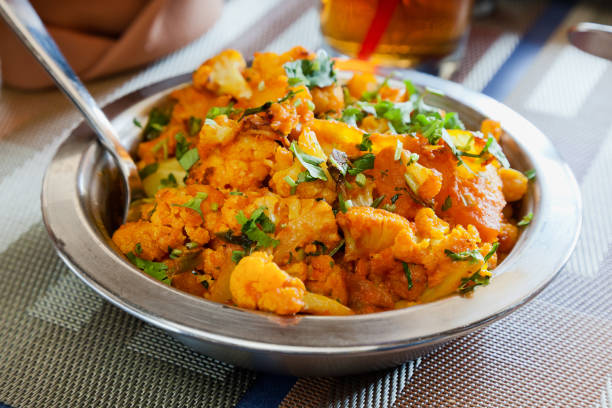

Heat the cooking pan and prepare the rolling surface.
Knead and divide the dough and roll out the balls.
Begin cooking the roti and cook it until it gets puffed.
Remove the roti and repeat the same with the next ball of dough.
Hence,by following the above procedure your roti can be cooked.
Tutorial:-
2.How to make Maggie.

In pan,Heat 2 tsp oil and saute 2 clove garlic and ½ onion.
Add ½ carrot, 2 tbsp capsicum, ½ tomato and 2 tbsp sweet corn.
Saute until the vegetables turn crunchy.
Add 1 cup water and get to a boil.
Now add 1 pack maggi noodles roughly and add 1 pack tastemaker.
Mix well and boil for 2 minutes or until the noodles are cooked well.
Your maggie is ready you can also add corinder for serving purposes.
Tutorial:-
3.How to make Dal Chawaal.

Soak the mixed daal for at least 20 minutes.
In a large pot, with 2-3 cups of water, boil it till tender.
Blend the daal with the water using a blender or an immersion blender, until it is smooth, or leave a little chunky as desired.
In a separate pot, on low heat, add oil and curry leaves, mustard seeds, fenugreek, and whole red chilli, if using (see notes) until fragrant and mustard seeds start cracking.
Add all other spices required for a delicious taste and add the tomatoes afterwards.
Add the blended dal and mix together.
Simmer on low heat, for 15 minutes to allow the flavors to blend together.
Wash, then soak 1 cup rice for 20 minutes.
In a medium pot, on high heat, let 4 cups of water come to a boil with the salt.
Drain, then add the soaked rice to the boiling water. Turn heat down to medium.
Let rice cook uncovered for 10-15 minutes, or until tender.
Hence,your daal chawaal is ready,serve them seprately and enjoy your food.
Tutorial:-
4.How to make Tea.
Boil water in a saucepan.
Add sugar and tea powder in it and boil it for 3-4 minutes on medium flame.
Add milk and boil it over medium flame for 6-7 minutes or until bubble starts to rise.
You will see the change in color of the tea from milky shade to brown shade when it is ready.
Turn off the gas and strain tea in cups.
Tutorial:-
5.How to make Aloo Sabzi.

Rinse the potatoes well.
Boil the potatoes with some salt with enough water in a pressure cooker, pan or steamer.
Pressure cooked the potatoes with water just covering the potatoes for 7-8 whistles.
The potatoes have to be cooked till tender.
Peel the potatoes when they are cooled and either chop them or crumble them.
Heat oil in a pan.Lower the flame add the mustard seeds and let them pop first.
Then add the cumin seeds and brown them.
Add the green chilies and curry leaves and saute for a minute on low flame.
Add the turmeric powder and asafoetida and stir.Add the chopped potatoes and stir.
Season with salt and sugar and saute the potatoes for 3-4 minutes on a low flame stirring often.
Switch off the fire and add the lemon juice and stir.
Either garnish the batata bhaji with coriander leaves or stir in the coriander leaves.
Serve batata bhaji hot with pooris, poli or with varan-bhaat.
Your Aloo Sabzi is ready and now you can enjoy your aloo sabzi.